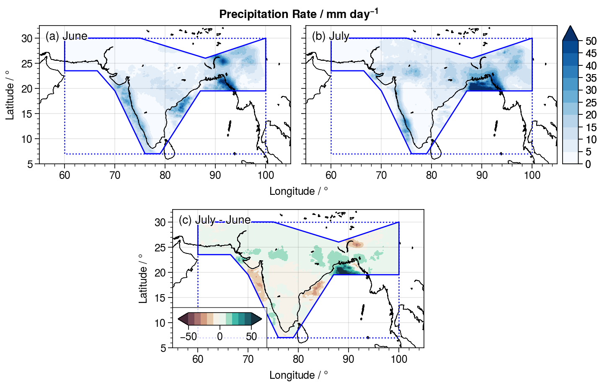

Downloading and Visualizing IMERG Data
In this example, we download IMERG monthly data in 2015 over the AR6_SAS GeoRegion, which encompasses the Indian Subcontinent, and do a data vizualization that shows the difference in precipitation over the area between the months of June and July.
1. Define the problem:
We do this by specifying the NASAPrecipitationDataset and the GeoRegion:
julia> using NASAPrecipitationjulia> npd = IMERGMonthly(dtbeg=Date(2015,1,1),dtend=Date(2015,1,1),sroot=joinpath(pwd(),"..","..","data")) # NASAPrecipitation.jl downloads monthly data year-by-yearERROR: MethodError: no method matching IMERGMonthly(::Type{String}, ::Type{Date}; dtbeg=Date("2015-01-01"), dtend=Date("2015-01-01"), sroot="/home/runner/work/NASAPrecipitation.jl/NASAPrecipitation.jl/docs/build/examples/../../data") Closest candidates are: IMERGMonthly(::Any, ::Any; start, stop, path) at ~/work/NASAPrecipitation.jl/NASAPrecipitation.jl/src/datasets/imergmo.jl:44 got unsupported keyword arguments "dtbeg", "dtend", "sroot" IMERGMonthly(::Any) at ~/work/NASAPrecipitation.jl/NASAPrecipitation.jl/src/datasets/imergmo.jl:44 got unsupported keyword arguments "dtbeg", "dtend", "sroot"julia> geo = GeoRegion("AR6_SAS") # AR6 regions are automatically defined in GeoRegions.jl v2 and above[ Info: 2023-01-01T20:27:01.189 - GeoRegions.jl - Retrieving information for the GeoRegion defined by the ID AR6_SAS The Polygonal Region AR6_SAS has the following properties: Region ID (regID) : AR6_SAS Parent ID (parID) : GLB Name (name) : South Asia Bounds (N,S,E,W) : [30.0, 7.0, 100.0, 60.0] Shape (shape) : Point2{Float64}[[60.0, 23.5], [60.0, 30.0], [75.0, 30.0], [88.0, 26.0], [100.0, 30.0], [100.0, 19.5], [95.0, 19.5], [87.0, 19.5], [79.0, 7.0], [76.0, 7.0], [70.0, 19.5], [66.5, 23.5], [60.0, 23.5]] (is180,is360) : (false, true)julia> download(npd,geo) # will fail because .netrc and .dodsrc are not providedERROR: UndefVarError: npd not defined
2. Read the Data using NCDatasets
We use NCDatasets to read the data
julia> using NCDatasetsjulia> ds = NCDataset(joinpath(pwd(),"..","..","data","imergmonthly","AR6_SAS","raw","imergmonthly-AR6_SAS-2015.nc"))ERROR: NetCDF error: Opening path /home/runner/work/NASAPrecipitation.jl/NASAPrecipitation.jl/docs/build/examples/../../data/imergmonthly/AR6_SAS/raw/imergmonthly-AR6_SAS-2015.nc: No such file or directory (NetCDF error code: 2)julia> lon = ds["longitude"][:];ERROR: UndefVarError: ds not definedjulia> lat = ds["latitude"][:];ERROR: UndefVarError: ds not definedjulia> prc = ds["prcp_rate"][:];ERROR: UndefVarError: ds not definedjulia> close(ds)ERROR: UndefVarError: ds not defined
3. Plotting the data using ProPlot
We then proceed to plot the data for July and January, and the difference between the two. I use the Python package ProPlot in my example, which can be called in Julia using PyCall, but this can be replicated.
First, I load the coastlines for me the plot (you need your own coastline file)
coord = readdlm("coastline.txt",comments=true,comment_char='#')
x = coord[:,1]
y = coord[:,2]Next, I load the bounds and the shape of the AR6_SAS GeoRegion
blon,blat,slon,slat = coordGeoRegion(geo)Finally, I do the plotting as below:
using PyCall, LaTeXStrings
pplt = pyimport("proplot")
pplt.close(); f,a = pplt.subplots([[1,1,2,2],[0,3,3,0]],aspect=20/11,axwidth=3)
a[1].contourf(lon,lat,prc[:,:,6]'*86400,cmap="Blues",levels=(0:10)*5,extend="max")
a[1].plot(x,y,c="k",lw=0.5)
a[1].plot(blon,blat,c="b",lw=1,linestyle=":")
a[1].plot(slon,slat,c="b",lw=1)
a[1].format(ultitle="(a) June")
c = a[2].contourf(lon,lat,prc[:,:,7]'*86400,cmap="Blues",levels=(0:10)*5,extend="max")
a[2].plot(x,y,c="k",lw=0.5)
a[2].plot(blon,blat,c="b",lw=1,linestyle=":")
a[2].plot(slon,slat,c="b",lw=1)
a[2].colorbar(c,loc="r")
a[2].format(ultitle="(b) July")
c = a[3].contourf(lon,lat,(prc[:,:,7].-prc[:,:,6])'*86400,cmap="drywet",levels=vcat(-5:5)*10,extend="both")
a[3].plot(x,y,c="k",lw=0.5)
a[3].plot(blon,blat,c="b",lw=1,linestyle=":")
a[3].plot(slon,slat,c="b",lw=1)
a[3].colorbar(c,loc="ll")
a[3].format(ultitle="(c) July - June")
for ax in a
ax.format(xlim=(55,105),ylim=(5,32.5),suptitle=L"Precipitation Rate / mm day$^{-1}$")
end
As we can see, the data downloaded is a grid spanning the bounds (blue dotted line), but only within the actual shape of the GeoRegion (blue solid line) is there actual valid data.